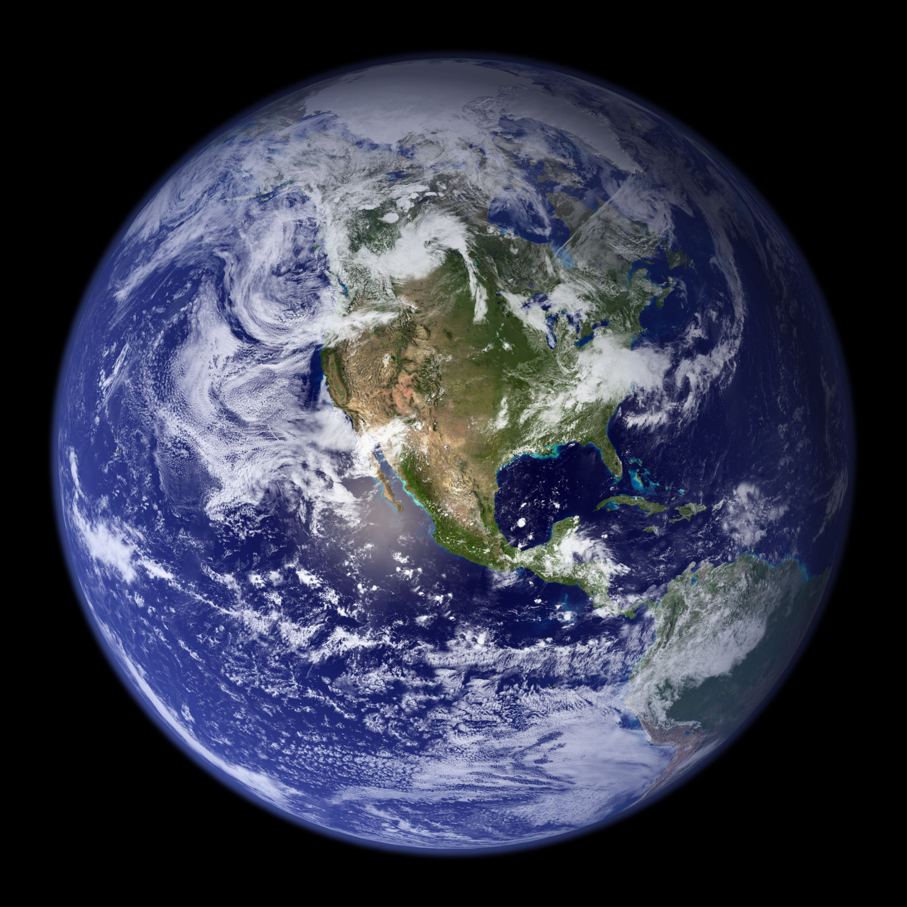

While Earth is only the fifth largest planet in the solar system, it is the only world in our solar system with liquid water on the surface. Just slightly larger than nearby Venus, Earth is the biggest of the four planets closest to the Sun, all of which are made of rock and metal.29-Mar-2022
| name | redius | avrage |
|---|---|---|
| mars | 465 | 35 |
| mars | 465 | 35 |
| venus | 45 | 350 |
| jupiter | 465 | 90 |